進場 106.15（排列那根 1h 收盤） 停損 101.24（破底低點；收盤跌破才出，距離 4.63%） 停利 115.97（2R） 出場 106.79 破底 101.24 深度 2.22% 在下 19h 量比 5.31x 進場均線 MA7 103.79 MA14 103.224 MA25 103.148
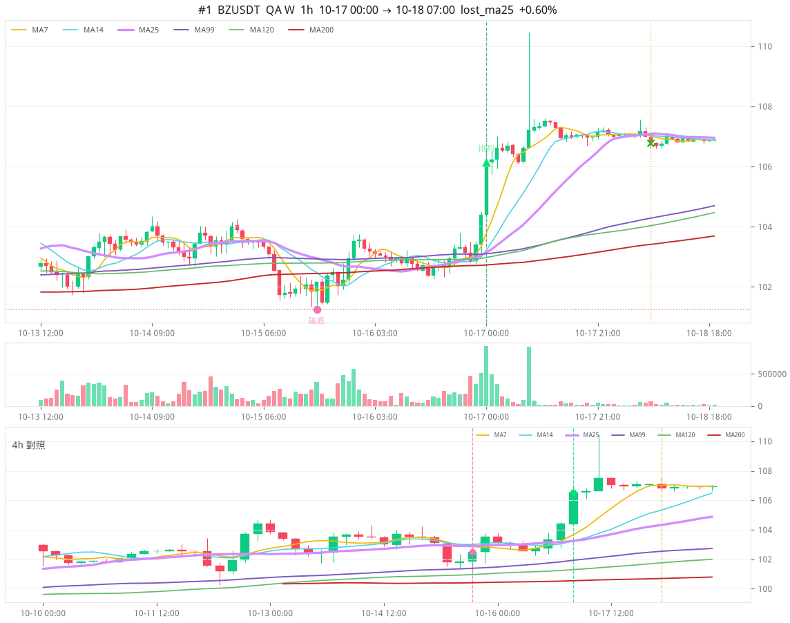
回測區間：2026-10-17 00:00 至 2026-10-30 23:59（台北時間）。只統計進場落在這段的訊號。最後一根已收盤 1h：2026-10-30 21:00。未下單。未扣手續費、資金費與稅。
--min-vol 1.5），而且進場當根 MA25 必須高於前一根 MA25（已上彎）。每筆獨立計算，沒有一次一單、沒有複利。勝率只算報酬 > 0。報酬 = 出場價 / 進場價 − 1。未扣手續費、資金費與稅。讀取失敗：無。
上圖是 1h，下圖是 4h 對照。黃 MA7、青 MA14、粉 MA25、紫 MA99、綠 MA120、酒紅 MA200。粉點是破底，綠三角是進場，出場在圖上的出場棒。
進場 106.15（排列那根 1h 收盤） 停損 101.24（破底低點；收盤跌破才出，距離 4.63%） 停利 115.97（2R） 出場 106.79 破底 101.24 深度 2.22% 在下 19h 量比 5.31x 進場均線 MA7 103.79 MA14 103.224 MA25 103.148

進場 0.21376（排列那根 1h 收盤） 停損 0.18975（破底低點；收盤跌破才出，距離 11.23%） 停利 0.26178（2R） 出場 0.20465 破底 0.18975 深度 5.33% 在下 20h 量比 5.42x 進場均線 MA7 0.200753 MA14 0.196934 MA25 0.19692
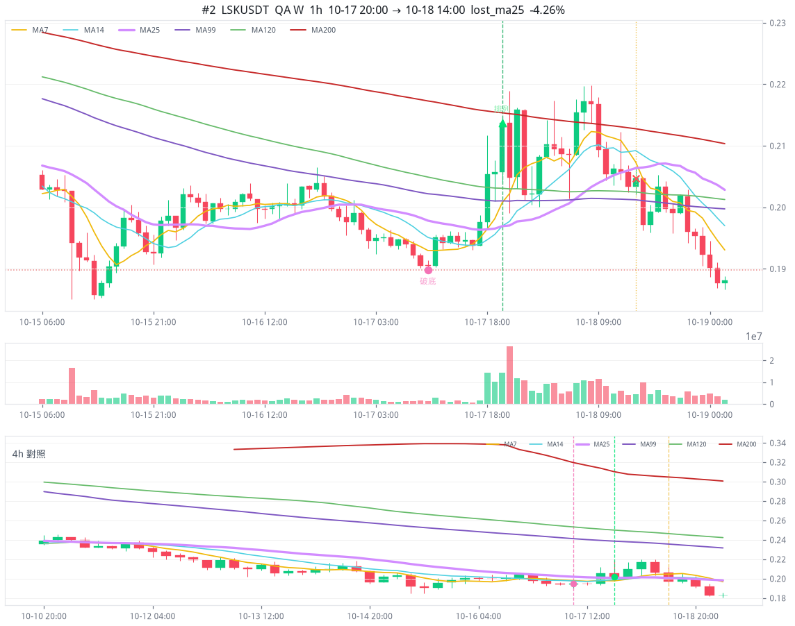
進場 334.05（排列那根 1h 收盤） 停損 323.93（破底低點；收盤跌破才出，距離 3.03%） 停利 354.29（2R） 出場 335.85 破底 323.93 深度 2.05% 在下 24h 量比 9.16x 進場均線 MA7 329.584 MA14 328.81 MA25 328.736
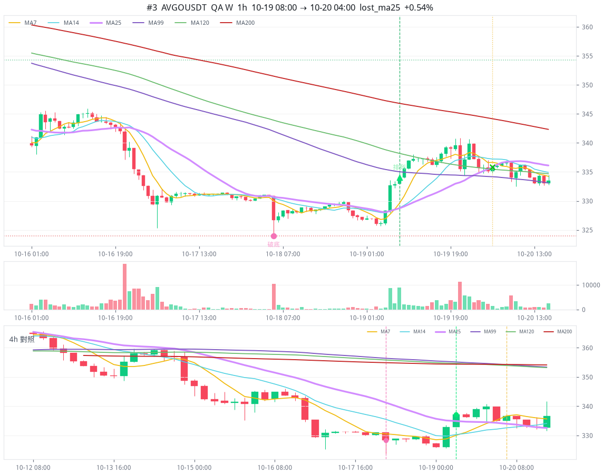
進場 11.78（排列那根 1h 收盤） 停損 10.01（破底低點；收盤跌破才出，距離 15.03%） 停利 15.32（2R） 出場 11.26 破底 10.01 深度 4.59% 在下 8h 量比 2.97x 進場均線 MA7 10.9229 MA14 10.555 MA25 10.5396
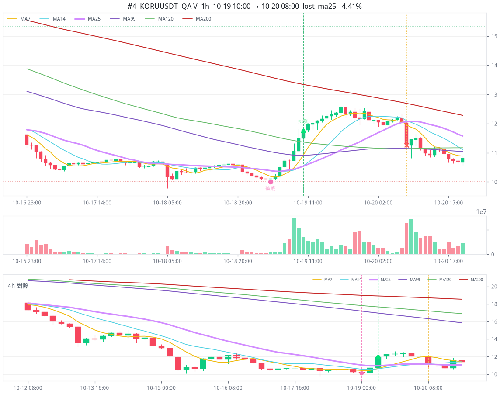
進場 0.148842（排列那根 1h 收盤） 停損 0.087012（破底低點；收盤跌破才出，距離 41.54%） 停利 0.272502（2R） 出場 0.123634 破底 0.087012 深度 22.30% 在下 5h 量比 2.19x 進場均線 MA7 0.119919 MA14 0.119536 MA25 0.118844
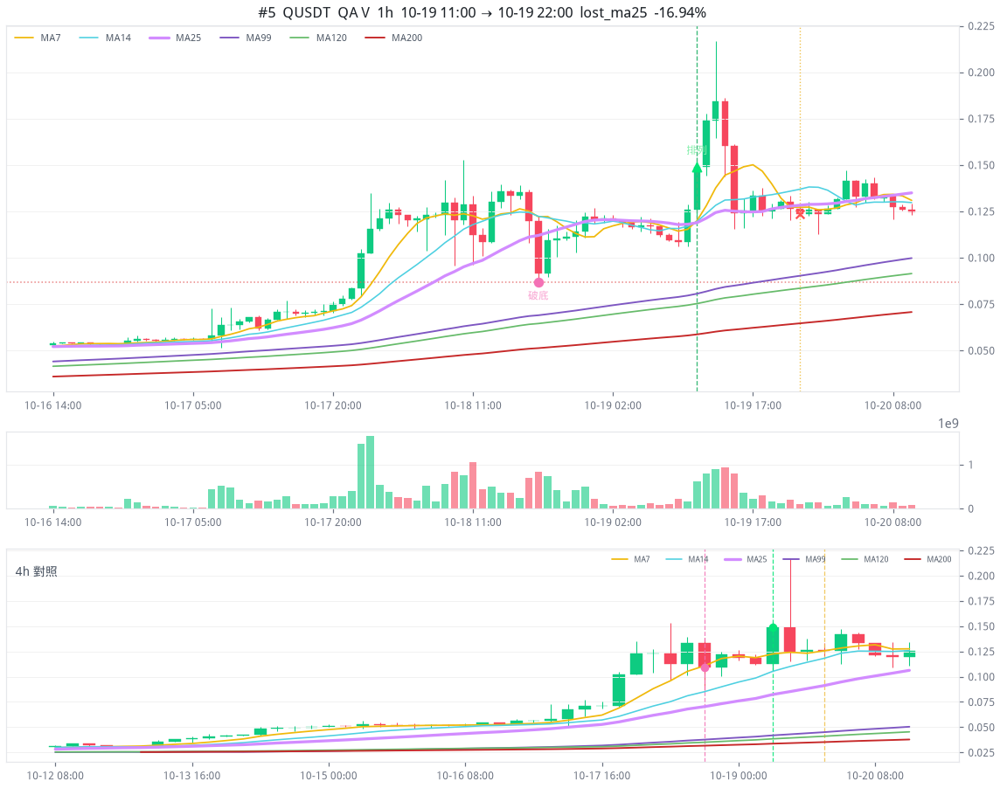
進場 950.21（排列那根 1h 收盤） 停損 882.17（破底低點；收盤跌破才出，距離 7.16%） 停利 1086.29（2R） 出場 915.56 破底 882.17 深度 2.86% 在下 8h 量比 2.41x 進場均線 MA7 924.983 MA14 909.123 MA25 908.221
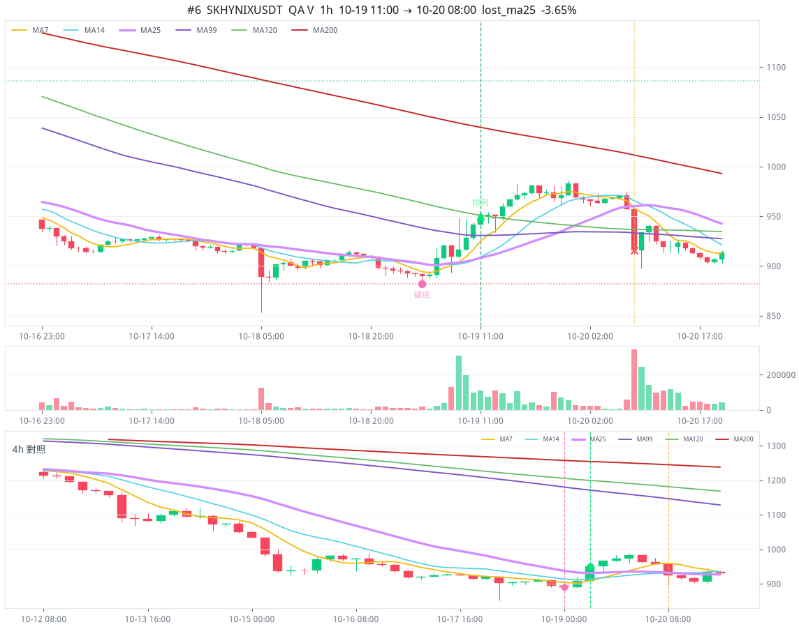
進場 0.709（排列那根 1h 收盤） 停損 0.6784（破底低點；收盤跌破才出，距離 4.32%） 停利 0.7702（2R） 出場 0.6999 破底 0.6784 深度 3.89% 在下 13h 量比 2.29x 進場均線 MA7 0.705171 MA14 0.700686 MA25 0.700232
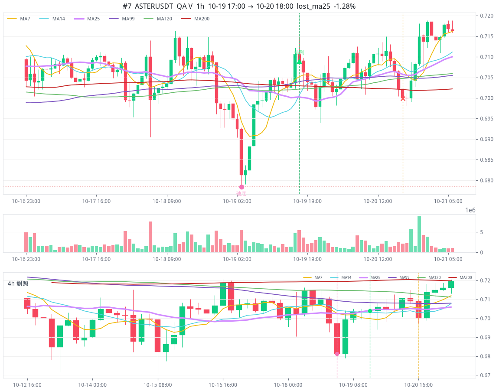
進場 0.007511（排列那根 1h 收盤） 停損 0.00693（破底低點；收盤跌破才出，距離 7.74%） 停利 0.008673（2R） 出場 0.008071 破底 0.00693 深度 4.17% 在下 26h 量比 4.95x 進場均線 MA7 0.007144 MA14 0.00710293 MA25 0.00709696
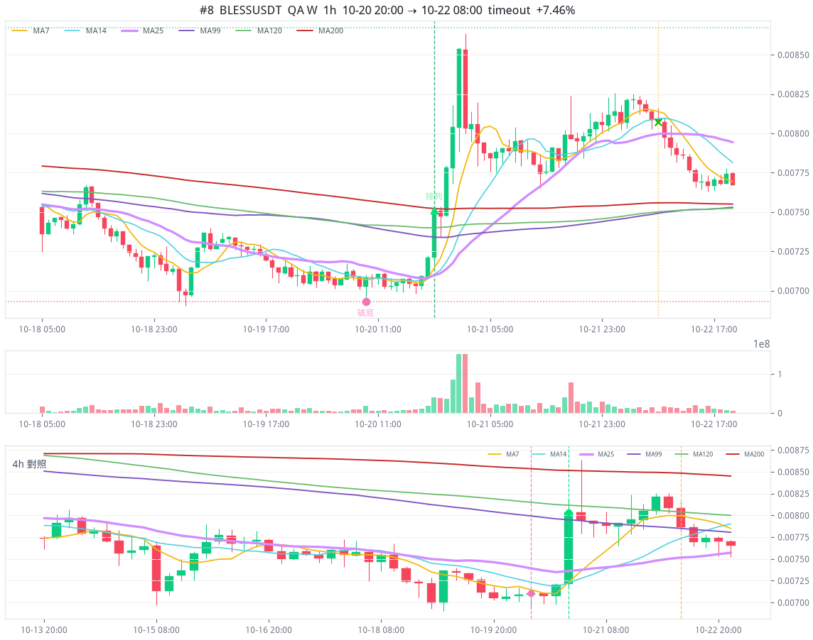
進場 0.2257（排列那根 1h 收盤） 停損 0.2145（破底低點；收盤跌破才出，距離 4.96%） 停利 0.2481（2R） 出場 0.2212 破底 0.2145 深度 2.14% 在下 26h 量比 8.22x 進場均線 MA7 0.2179 MA14 0.217721 MA25 0.217588
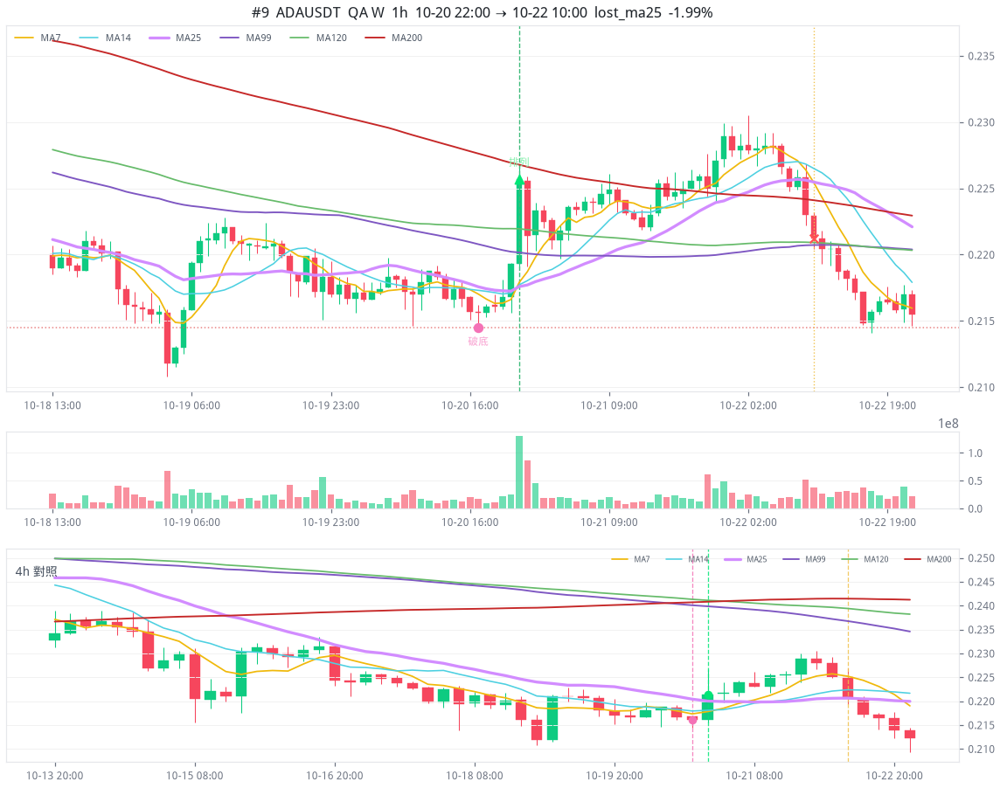
進場 2471.45（排列那根 1h 收盤） 停損 2370.74（破底低點；收盤跌破才出，距離 4.07%） 停利 2672.87（2R） 出場 2440.84 破底 2370.74 深度 1.81% 在下 24h 量比 8.44x 進場均線 MA7 2401.98 MA14 2401.45 MA25 2401.27
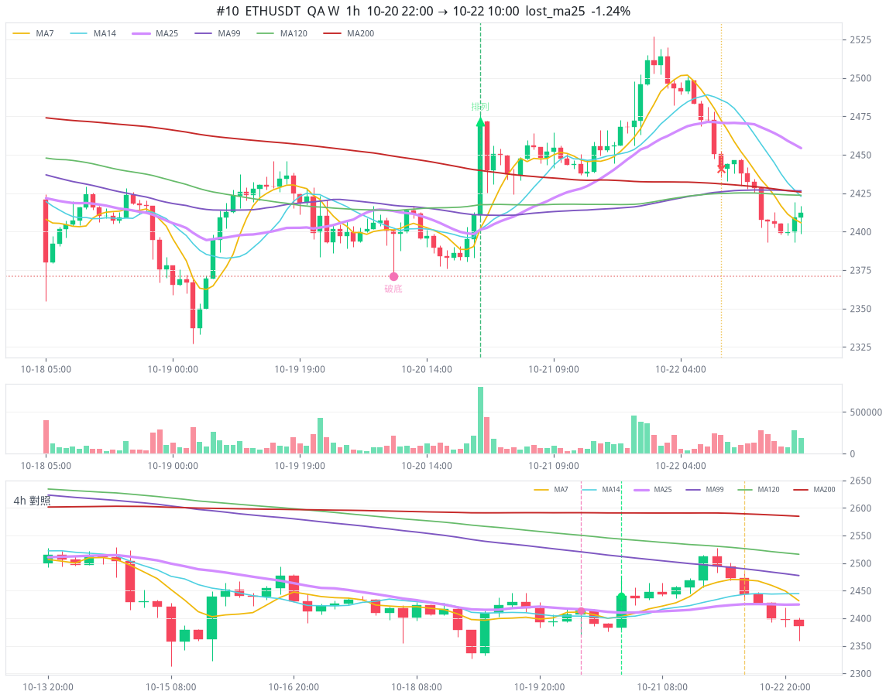
進場 1.0638（排列那根 1h 收盤） 停損 0.9962（破底低點；收盤跌破才出，距離 6.35%） 停利 1.199（2R） 出場 1.0289 破底 0.9962 深度 3.86% 在下 26h 量比 5.88x 進場均線 MA7 1.01744 MA14 1.01566 MA25 1.01421
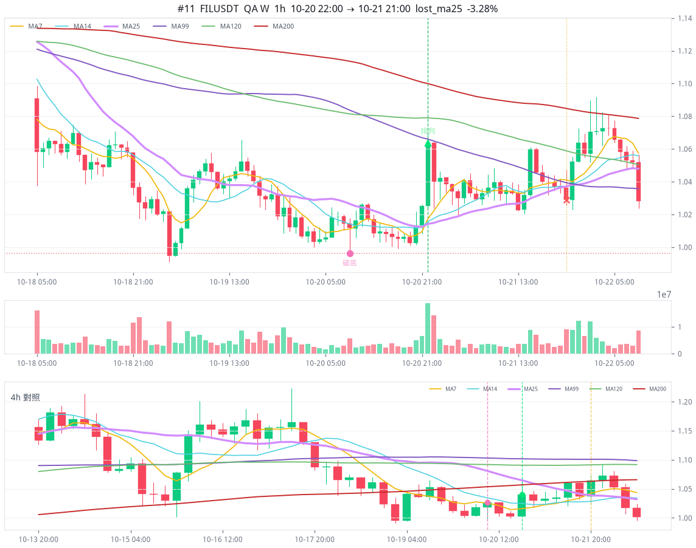
進場 12.42（排列那根 1h 收盤） 停損 11.83（破底低點；收盤跌破才出，距離 4.75%） 停利 13.6（2R） 出場 12.316 破底 11.83 深度 1.89% 在下 21h 量比 6.59x 進場均線 MA7 12.0291 MA14 12.0198 MA25 11.9939
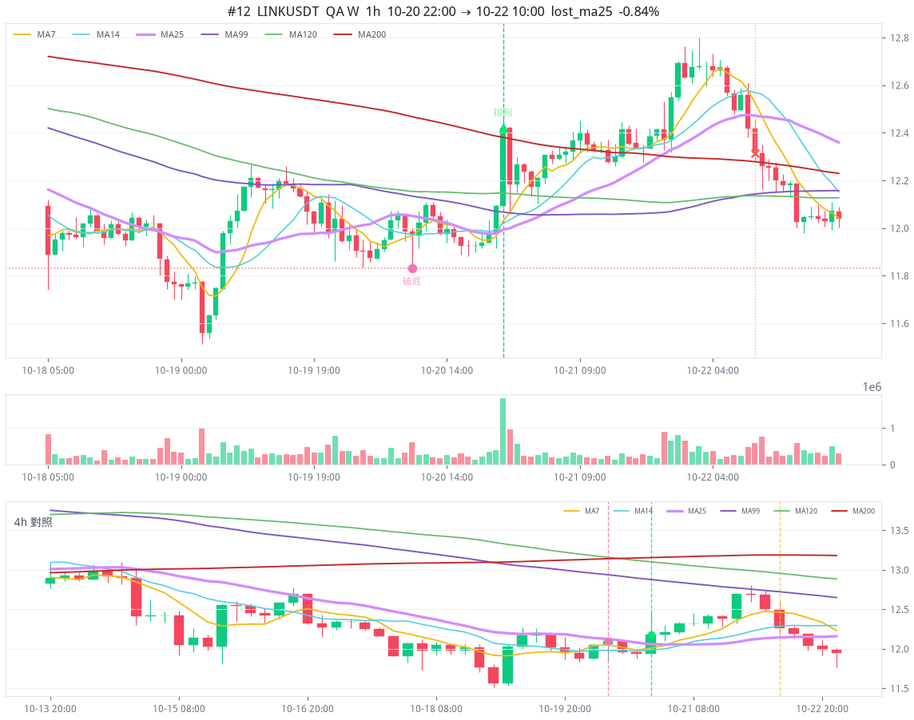
進場 1.0405（排列那根 1h 收盤） 停損 0.9755（破底低點；收盤跌破才出，距離 6.25%） 停利 1.1705（2R） 出場 1.0288 破底 0.9755 深度 2.29% 在下 19h 量比 6.20x 進場均線 MA7 1.00139 MA14 0.99835 MA25 0.995408
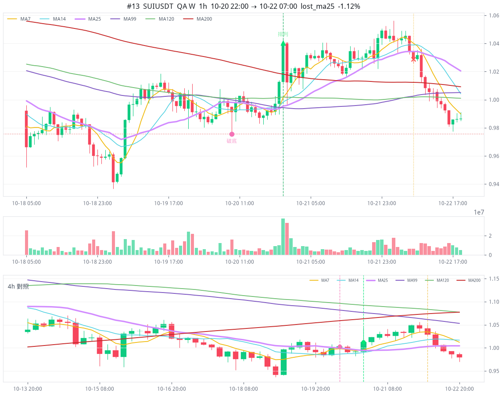
進場 152.04（排列那根 1h 收盤） 停損 146.71（破底低點；收盤跌破才出，距離 3.51%） 停利 162.7（2R） 出場 154.83 破底 146.71 深度 3.06% 在下 16h 量比 4.22x 進場均線 MA7 150.677 MA14 150.374 MA25 149.57
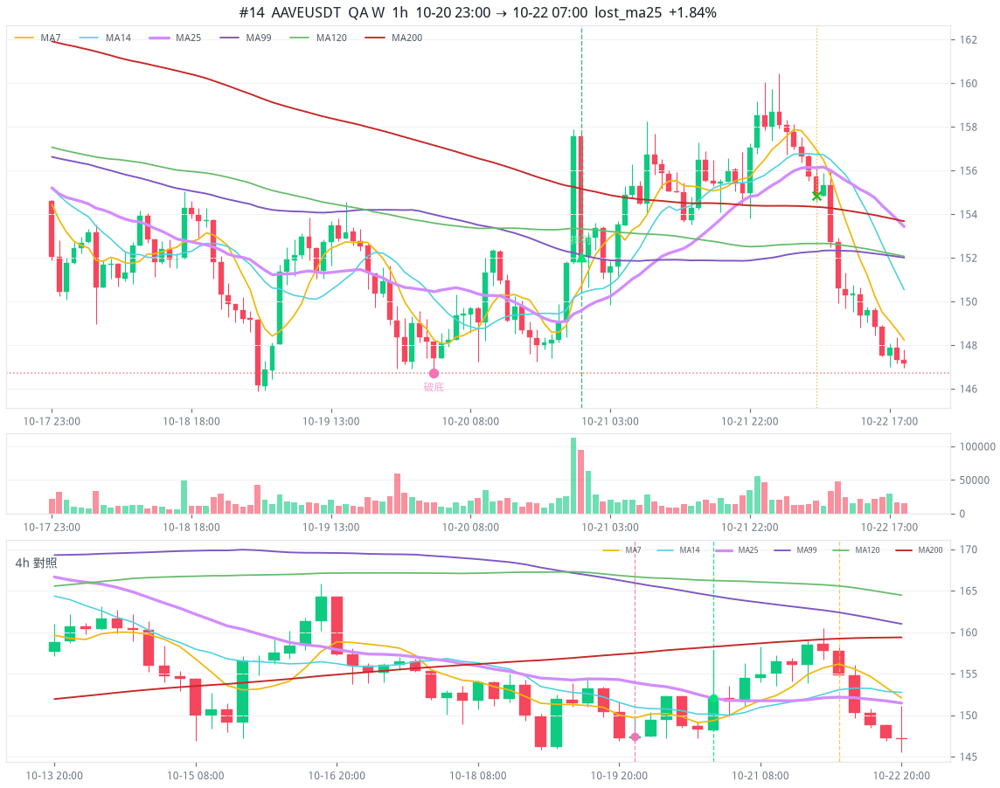
進場 85.3（排列那根 1h 收盤） 停損 80.02（破底低點；收盤跌破才出，距離 6.19%） 停利 95.86（2R） 出場 87.35 破底 80.02 深度 4.21% 在下 24h 量比 2.91x 進場均線 MA7 82.6171 MA14 82.1764 MA25 82.0808
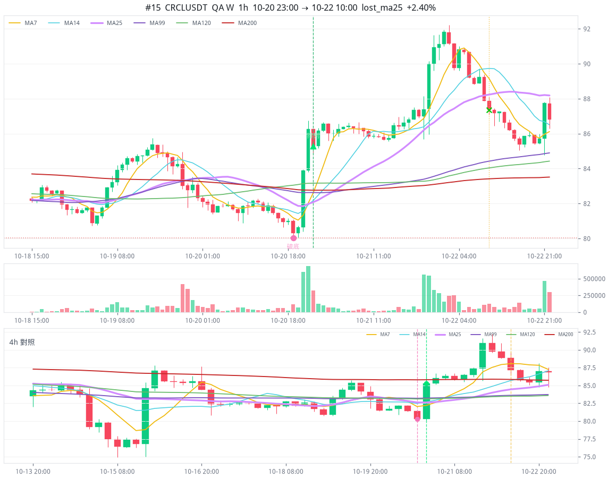
進場 144.39（排列那根 1h 收盤） 停損 133.54（破底低點；收盤跌破才出，距離 7.51%） 停利 166.09（2R） 出場 148.43 破底 133.54 深度 3.89% 在下 21h 量比 3.19x 進場均線 MA7 138.03 MA14 136.949 MA25 136.878
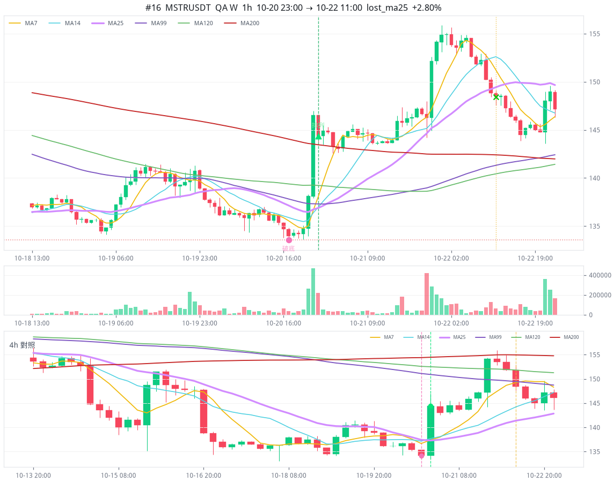
進場 1.768（排列那根 1h 收盤） 停損 1.664（破底低點；收盤跌破才出，距離 5.88%） 停利 1.976（2R） 出場 1.795 破底 1.664 深度 2.94% 在下 20h 量比 2.79x 進場均線 MA7 1.71571 MA14 1.70529 MA25 1.70428
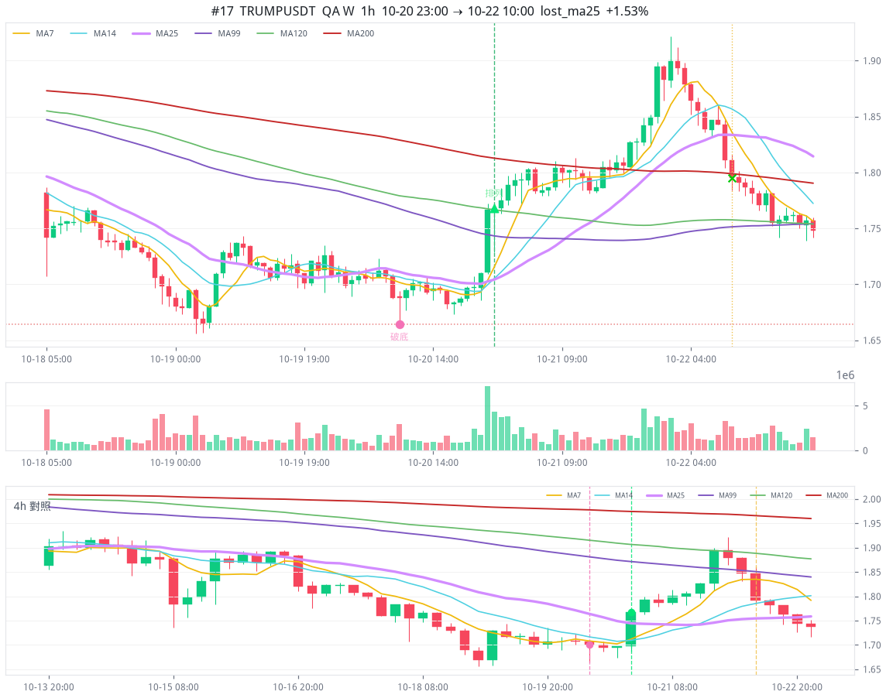
進場 272.92（排列那根 1h 收盤） 停損 261.81（破底低點；收盤跌破才出，距離 4.07%） 停利 295.14（2R） 出場 271.77 破底 261.81 深度 3.02% 在下 20h 量比 1.56x 進場均線 MA7 268.449 MA14 266.797 MA25 266.688
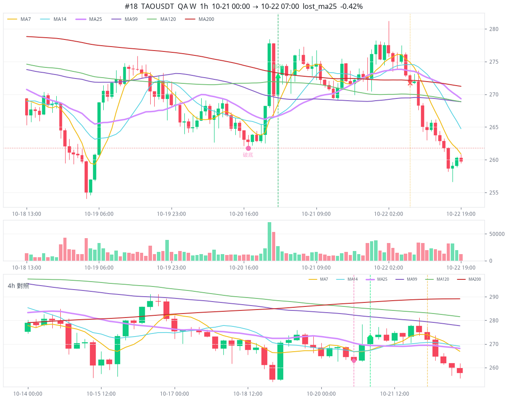
進場 93.97（排列那根 1h 收盤） 停損 88.97（破底低點；收盤跌破才出，距離 5.32%） 停利 103.97（2R） 出場 91.75 破底 88.97 深度 4.31% 在下 19h 量比 1.70x 進場均線 MA7 93.0214 MA14 91.9 MA25 91.8704
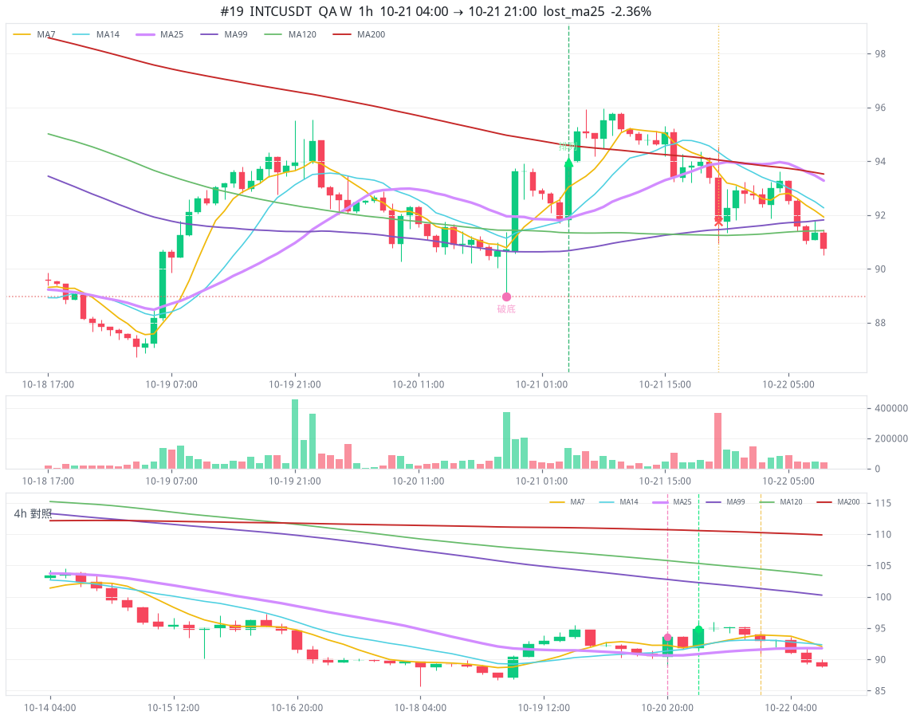
進場 221.3（排列那根 1h 收盤） 停損 213.17（破底低點；收盤跌破才出，距離 3.67%） 停利 237.56（2R） 出場 219.55 破底 213.17 深度 2.09% 在下 21h 量比 1.69x 進場均線 MA7 218.401 MA14 217.415 MA25 217.376
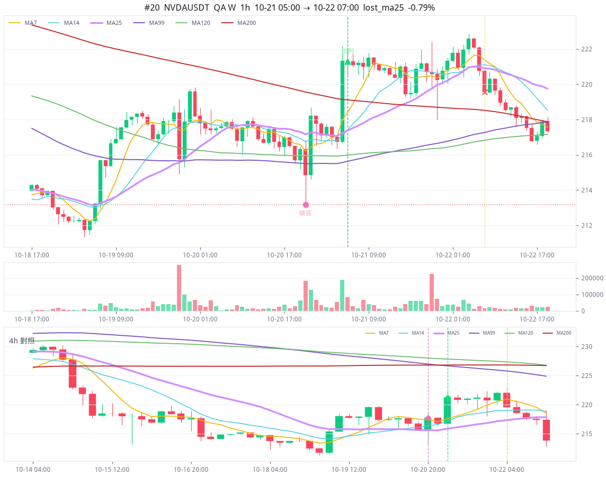
進場 155.7（排列那根 1h 收盤） 停損 143.62（破底低點；收盤跌破才出，距離 7.76%） 停利 179.86（2R） 出場 158.74 破底 143.62 深度 3.26% 在下 19h 量比 2.24x 進場均線 MA7 149.857 MA14 148.427 MA25 148.391
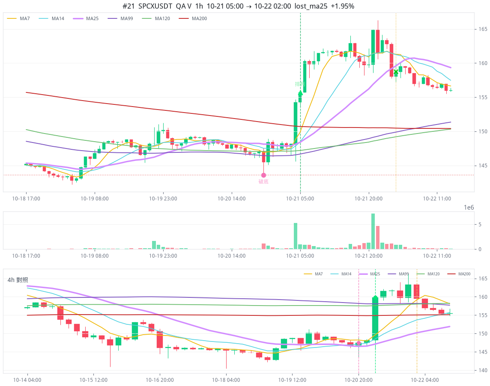
進場 0.008（排列那根 1h 收盤） 停損 0.007526（破底低點；收盤跌破才出，距離 5.93%） 停利 0.008948（2R） 出場 0.007781 破底 0.007526 深度 5.92% 在下 23h 量比 4.29x 進場均線 MA7 0.00781286 MA14 0.00774007 MA25 0.00773572
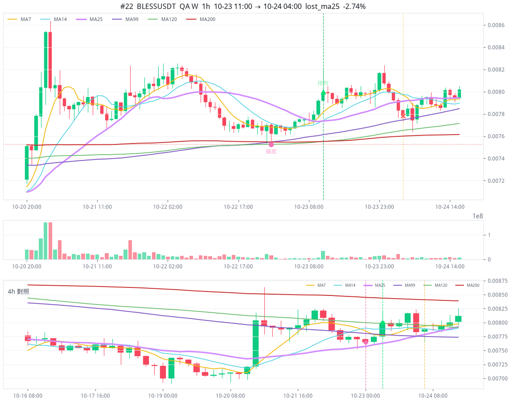
進場 286.69（排列那根 1h 收盤） 停損 271.6（破底低點；收盤跌破才出，距離 5.26%） 停利 316.87（2R） 出場 282.23 破底 271.6 深度 5.30% 在下 26h 量比 2.84x 進場均線 MA7 279.921 MA14 276.949 MA25 276.644
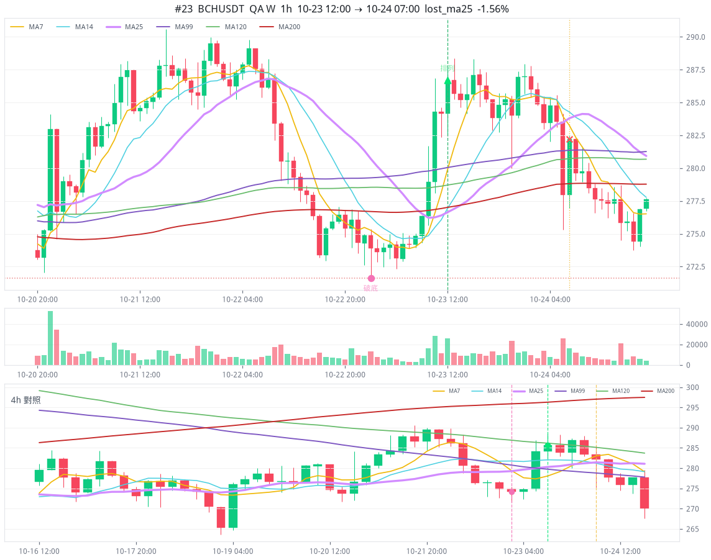
進場 0.007957（排列那根 1h 收盤） 停損 0.007603（破底低點；收盤跌破才出，距離 4.45%） 停利 0.008665（2R） 出場 0.007809 破底 0.007603 深度 6.50% 在下 25h 量比 1.85x 進場均線 MA7 0.00788971 MA14 0.00782686 MA25 0.00781544
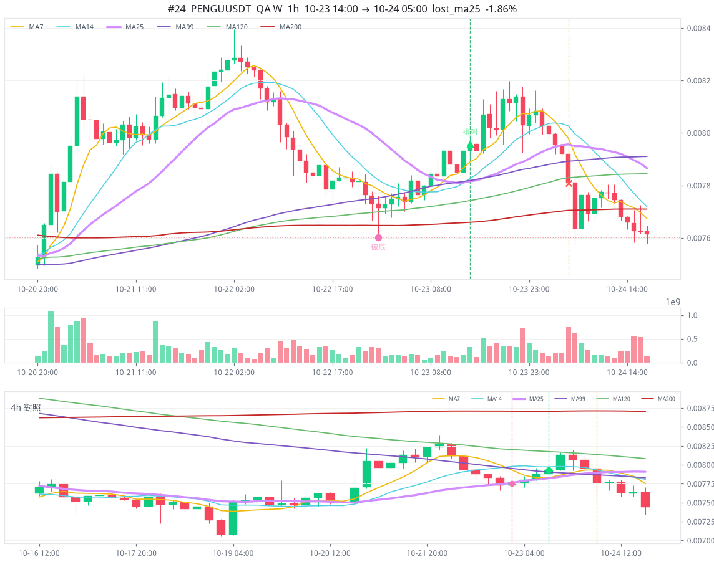
進場 81711.2（排列那根 1h 收盤） 停損 80888.9（破底低點；收盤跌破才出，距離 1.01%） 停利 83355.8（2R） 出場 81255 破底 80888.9 深度 3.38% 在下 31h 量比 2.08x 進場均線 MA7 81687.3 MA14 81650.7 MA25 81565.9
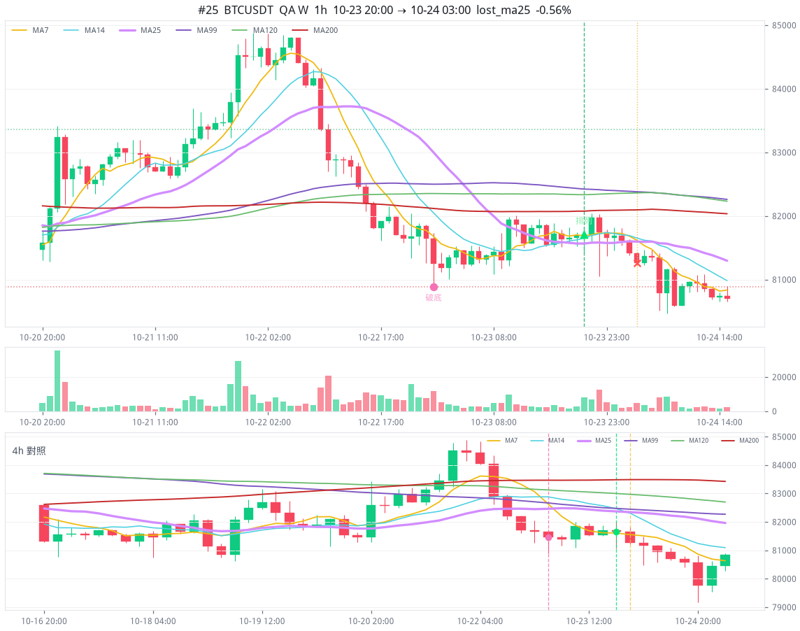
進場 47.39（排列那根 1h 收盤） 停損 44.72（破底低點；收盤跌破才出，距離 5.63%） 停利 52.73（2R） 出場 47.17 破底 44.72 深度 9.17% 在下 33h 量比 3.26x 進場均線 MA7 47.23 MA14 46.9921 MA25 46.5232
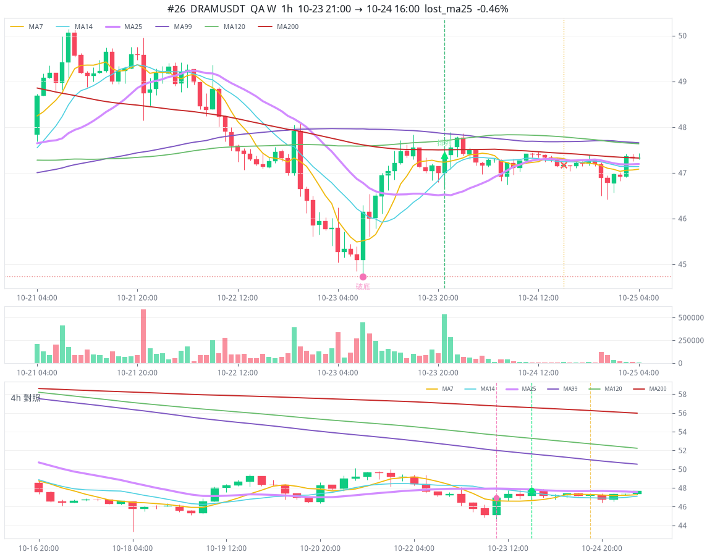
進場 78.336（排列那根 1h 收盤） 停損 76.603（破底低點；收盤跌破才出，距離 2.21%） 停利 81.802（2R） 出場 77.182 破底 76.603 深度 5.71% 在下 31h 量比 2.11x 進場均線 MA7 78.1264 MA14 78.0621 MA25 77.8844
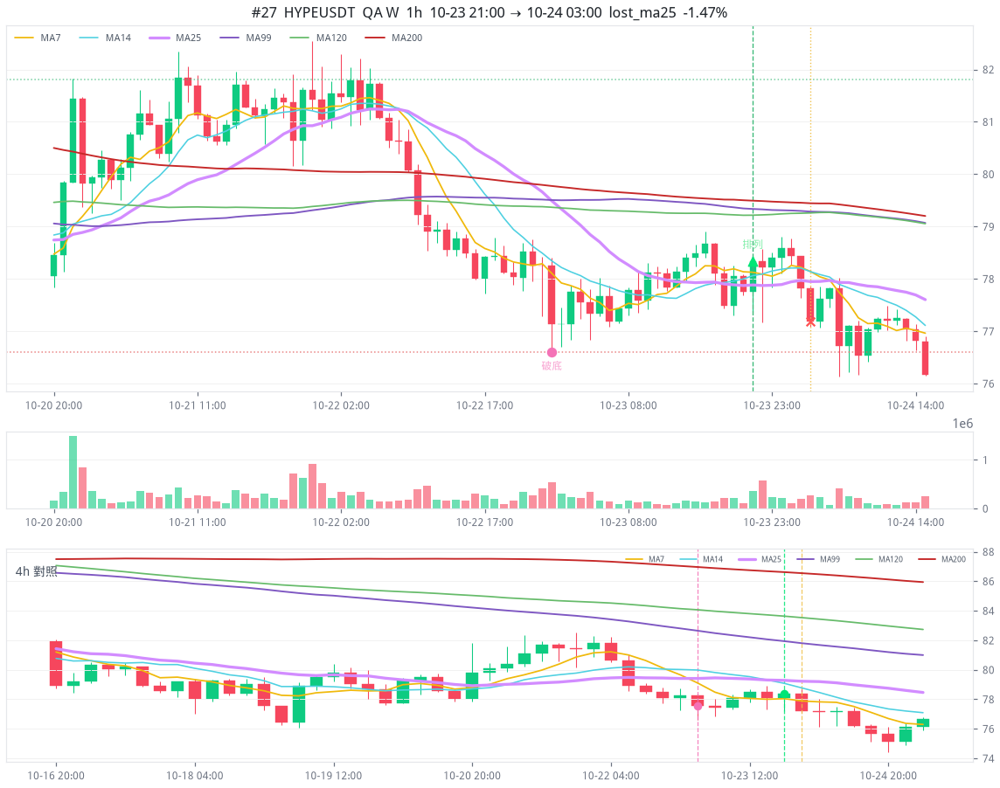
進場 0.007911（排列那根 1h 收盤） 停損 0.007618（破底低點；收盤跌破才出，距離 3.70%） 停利 0.008497（2R） 出場 0.008497 破底 0.007618 深度 3.51% 在下 32h 量比 2.18x 進場均線 MA7 0.00774714 MA14 0.0077375 MA25 0.00772472
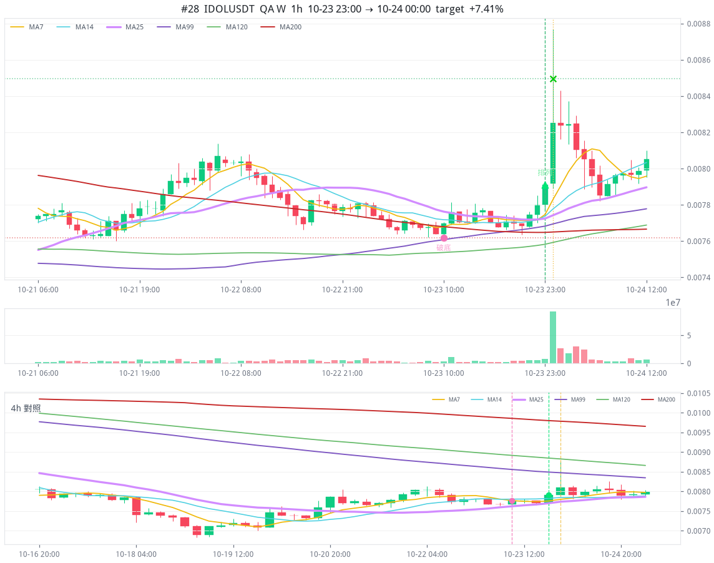
進場 0.03471（排列那根 1h 收盤） 停損 0.03106（破底低點；收盤跌破才出，距離 10.52%） 停利 0.04201（2R） 出場 0.03401 破底 0.03106 深度 6.05% 在下 8h 量比 1.98x 進場均線 MA7 0.0341086 MA14 0.0332314 MA25 0.0331868
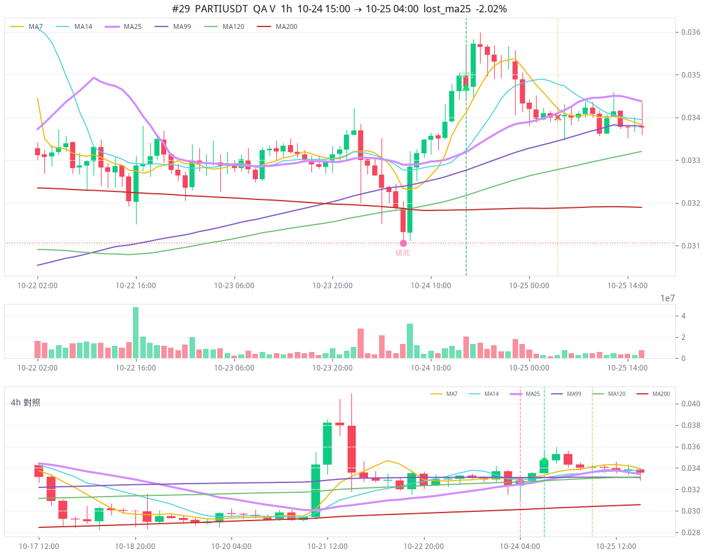
進場 0.008101（排列那根 1h 收盤） 停損 0.007639（破底低點；收盤跌破才出，距離 5.70%） 停利 0.009025（2R） 出場 0.007971 破底 0.007639 深度 3.56% 在下 10h 量比 2.07x 進場均線 MA7 0.00802643 MA14 0.00797086 MA25 0.00795716
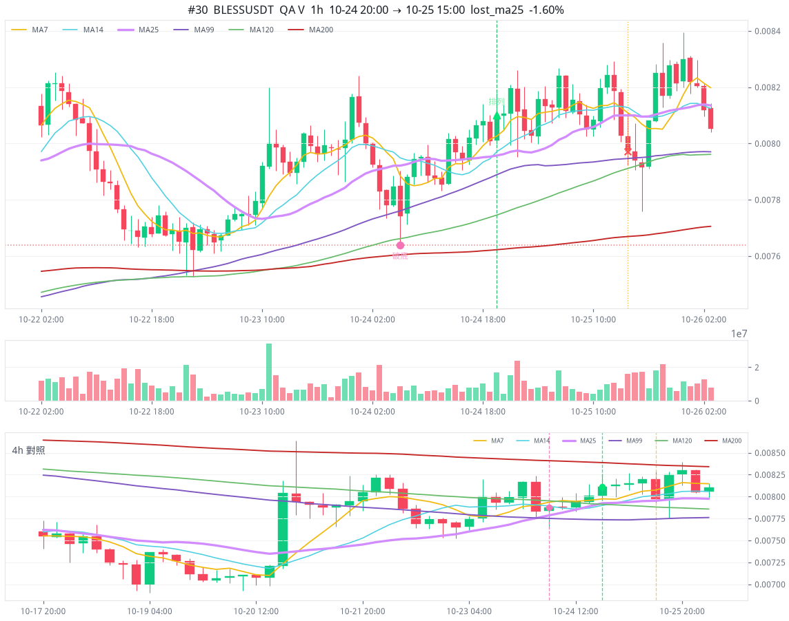
進場 0.03456（排列那根 1h 收盤） 停損 0.03238（破底低點；收盤跌破才出，距離 6.31%） 停利 0.03892（2R） 出場 0.03892 破底 0.03238 深度 6.16% 在下 36h 量比 7.27x 進場均線 MA7 0.0337029 MA14 0.0334286 MA25 0.0333972
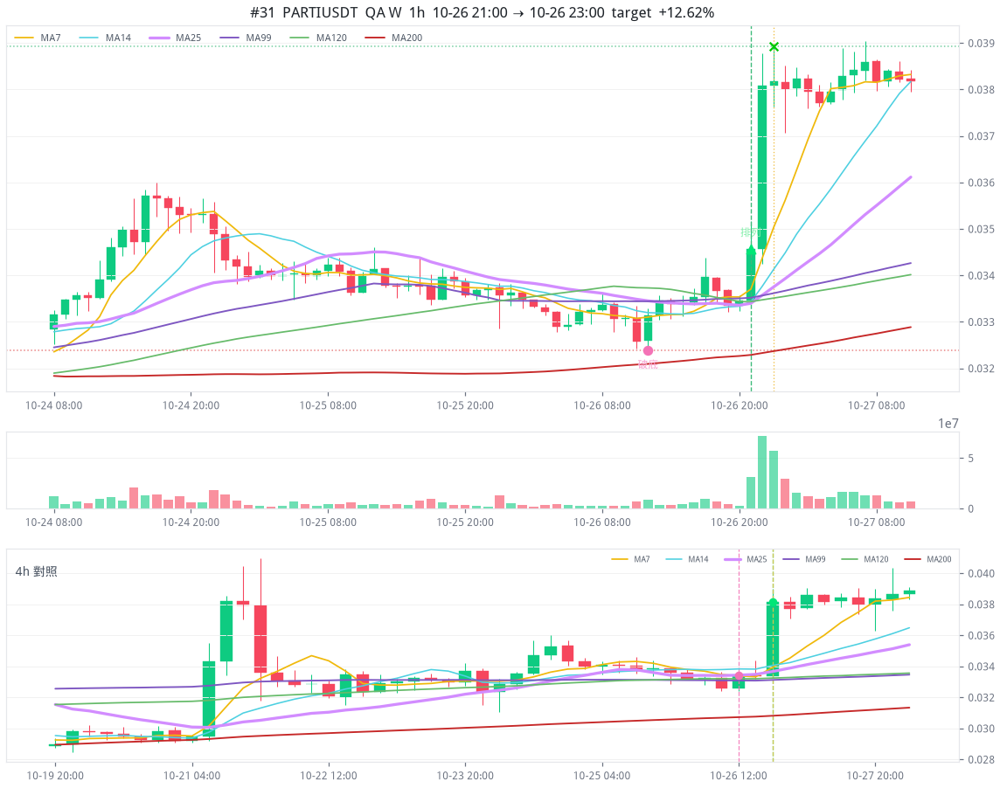
進場 817.56（排列那根 1h 收盤） 停損 744（破底低點；收盤跌破才出，距離 9.00%） 停利 964.68（2R） 出場 876.7 破底 744 深度 2.40% 在下 12h 量比 4.98x 進場均線 MA7 777.463 MA14 765.697 MA25 765.375
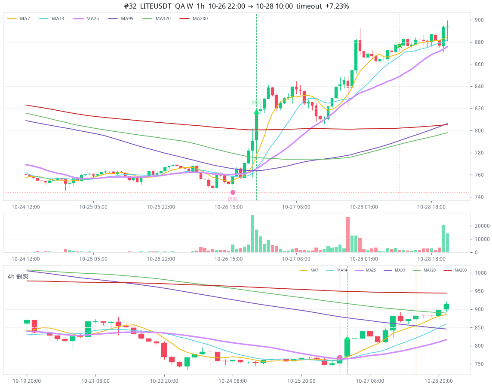
進場 1252（排列那根 1h 收盤） 停損 1177.22（破底低點；收盤跌破才出，距離 5.97%） 停利 1401.56（2R） 出場 1220.84 破底 1177.22 深度 2.64% 在下 7h 量比 1.80x 進場均線 MA7 1230.98 MA14 1216.13 MA25 1215.86
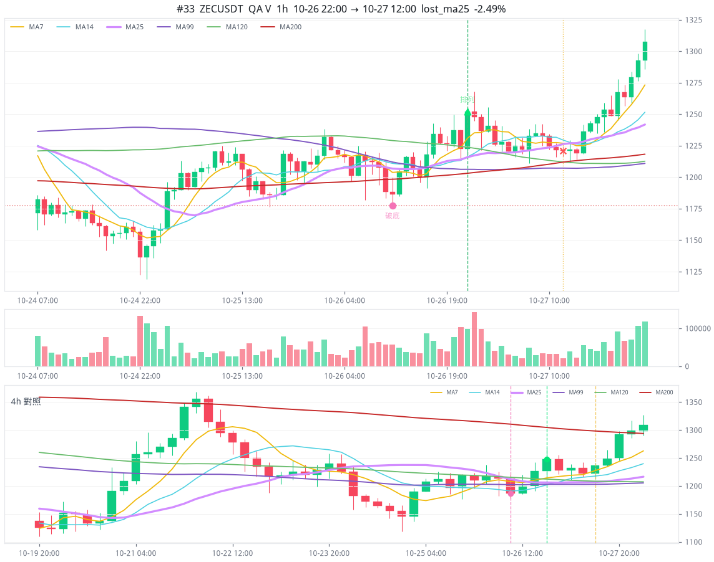
進場 17.26（排列那根 1h 收盤） 停損 15.37（破底低點；收盤跌破才出，距離 10.95%） 停利 21.04（2R） 出場 16.76 破底 15.37 深度 2.98% 在下 11h 量比 3.04x 進場均線 MA7 16.35 MA14 16.0271 MA25 15.9884
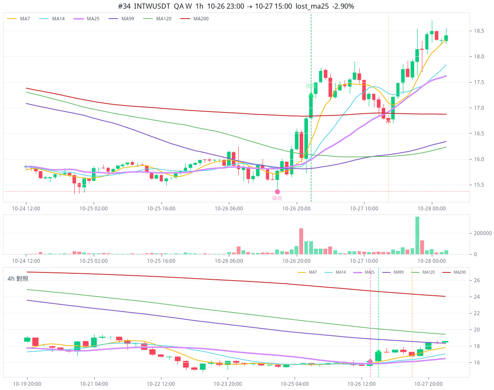
進場 1.689（排列那根 1h 收盤） 停損 1.629（破底低點；收盤跌破才出，距離 3.55%） 停利 1.809（2R） 出場 1.675 破底 1.629 深度 2.97% 在下 14h 量比 2.44x 進場均線 MA7 1.67257 MA14 1.65764 MA25 1.65728
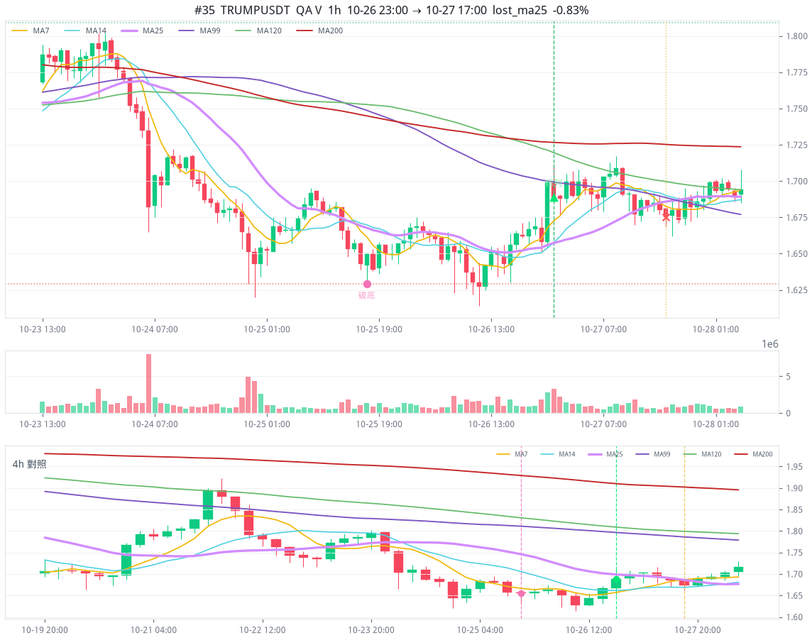
進場 0.110945（排列那根 1h 收盤） 停損 0.052033（破底低點；收盤跌破才出，距離 53.10%） 停利 0.228769（2R） 出場 0.228769 破底 0.052033 深度 34.08% 在下 27h 量比 8.98x 進場均線 MA7 0.0653373 MA14 0.0610989 MA25 0.0595645
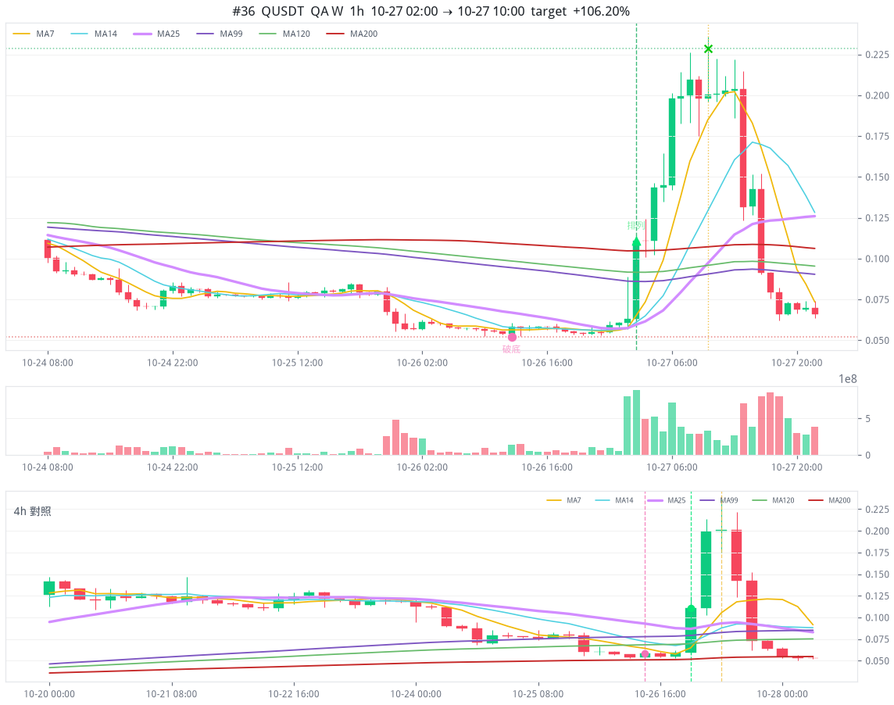
進場 1.3086（排列那根 1h 收盤） 停損 1.2722（破底低點；收盤跌破才出，距離 2.78%） 停利 1.3814（2R） 出場 1.3245 破底 1.2722 深度 2.17% 在下 17h 量比 2.61x 進場均線 MA7 1.29503 MA14 1.29456 MA25 1.29157
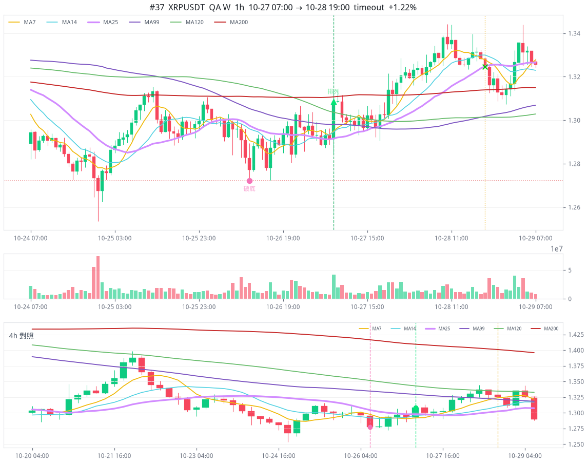
進場 0.5263（排列那根 1h 收盤） 停損 0.5006（破底低點；收盤跌破才出，距離 4.88%） 停利 0.5777（2R） 出場 0.5777 破底 0.5006 深度 4.24% 在下 26h 量比 1.53x 進場均線 MA7 0.5243 MA14 0.516814 MA25 0.514676
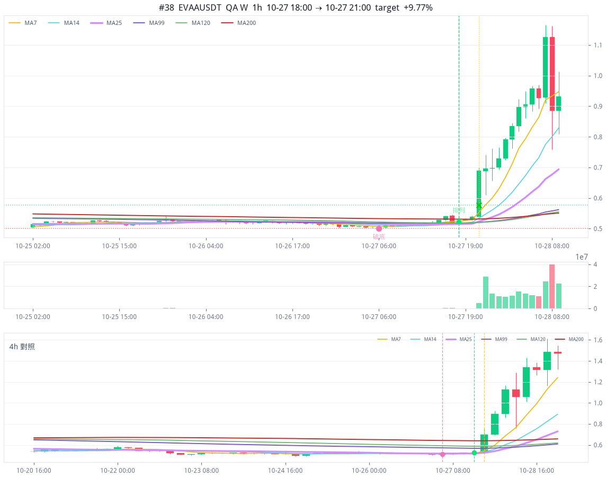
進場 149.71（排列那根 1h 收盤） 停損 144.92（破底低點；收盤跌破才出，距離 3.20%） 停利 159.29（2R） 出場 148.82 破底 144.92 深度 2.58% 在下 12h 量比 17.94x 進場均線 MA7 148.67 MA14 148.235 MA25 148.203
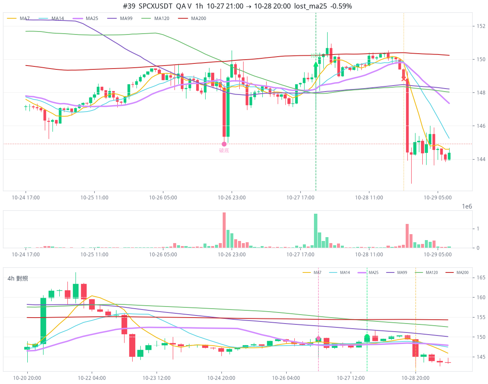
進場 2346.13（排列那根 1h 收盤） 停損 2292（破底低點；收盤跌破才出，距離 2.31%） 停利 2454.39（2R） 出場 2335.23 破底 2292 深度 2.36% 在下 27h 量比 3.37x 進場均線 MA7 2325.6 MA14 2318.91 MA25 2318.76
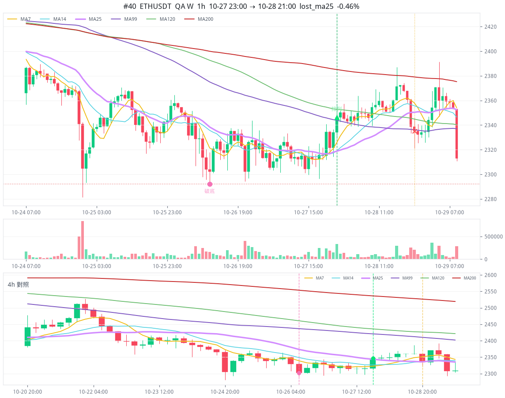
進場 4.607（排列那根 1h 收盤） 停損 4.384（破底低點；收盤跌破才出，距離 4.84%） 停利 5.053（2R） 出場 4.598 破底 4.384 深度 3.69% 在下 23h 量比 2.04x 進場均線 MA7 4.53557 MA14 4.48686 MA25 4.48196
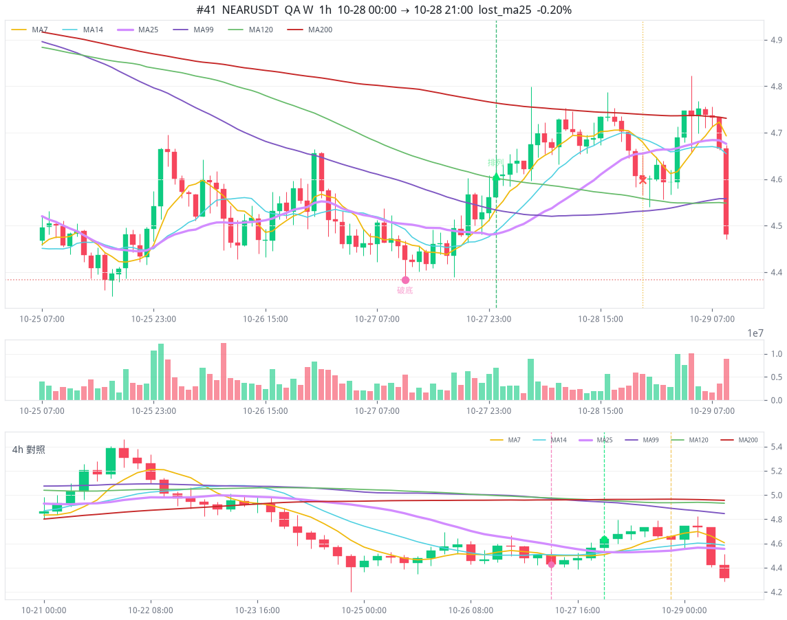
進場 0.007751（排列那根 1h 收盤） 停損 0.007369（破底低點；收盤跌破才出，距離 4.93%） 停利 0.008515（2R） 出場 0.007686 破底 0.007369 深度 1.80% 在下 18h 量比 1.74x 進場均線 MA7 0.007559 MA14 0.00749529 MA25 0.00749452
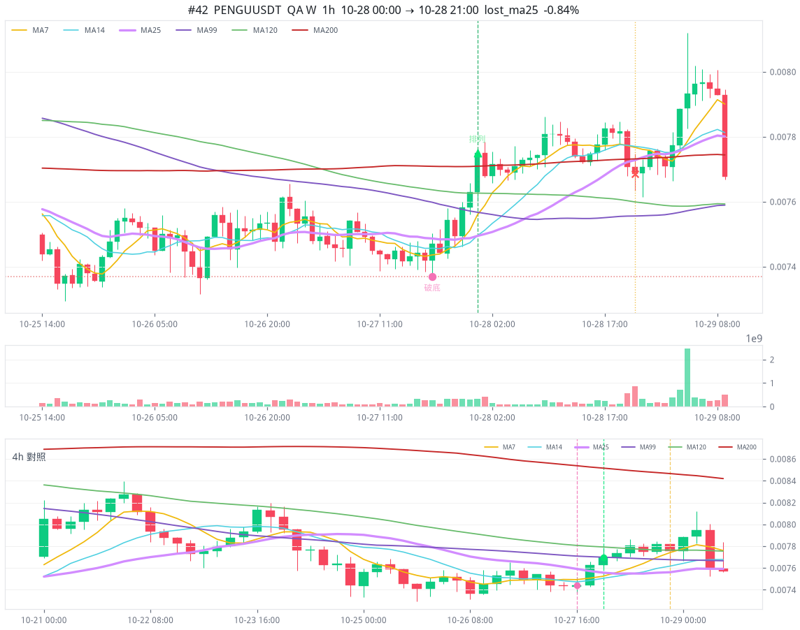
進場 0.17566（排列那根 1h 收盤） 停損 0.16313（破底低點；收盤跌破才出，距離 7.13%） 停利 0.20072（2R） 出場 0.16513 破底 0.16313 深度 3.09% 在下 7h 量比 3.07x 進場均線 MA7 0.169544 MA14 0.168646 MA25 0.168538
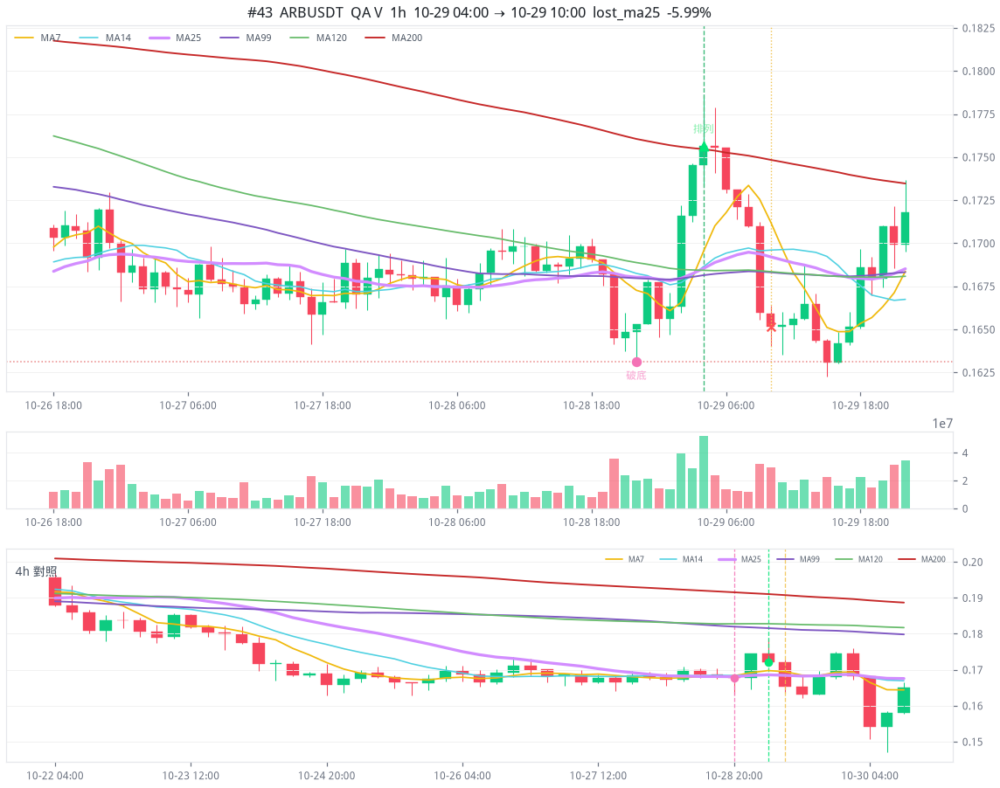
進場 89.657（排列那根 1h 收盤） 停損 78.143（破底低點；收盤跌破才出，距離 12.84%） 停利 112.685（2R） 出場 91.411 破底 78.143 深度 3.72% 在下 22h 量比 4.09x 進場均線 MA7 82.7829 MA14 81.0356 MA25 80.8359
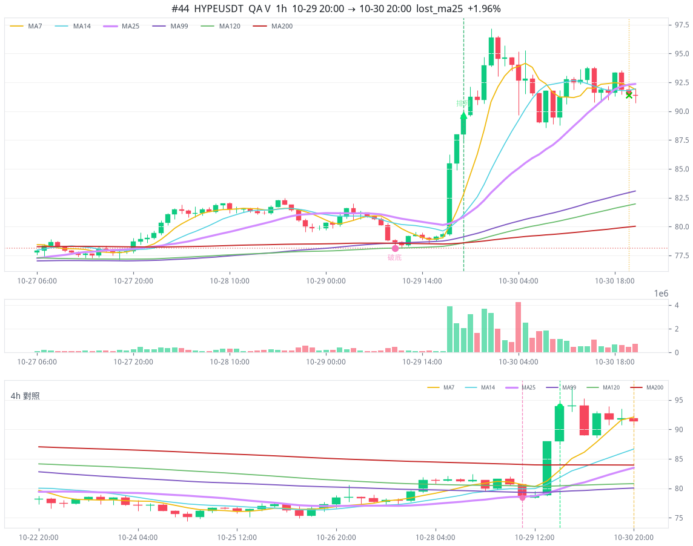
進場 0.005499（排列那根 1h 收盤） 停損 0.0047795（破底低點；收盤跌破才出，距離 13.08%） 停利 0.006938（2R） 出場 0.0046527 破底 0.0047795 深度 3.83% 在下 7h 量比 3.55x 進場均線 MA7 0.00500837 MA14 0.00500513 MA25 0.00499005
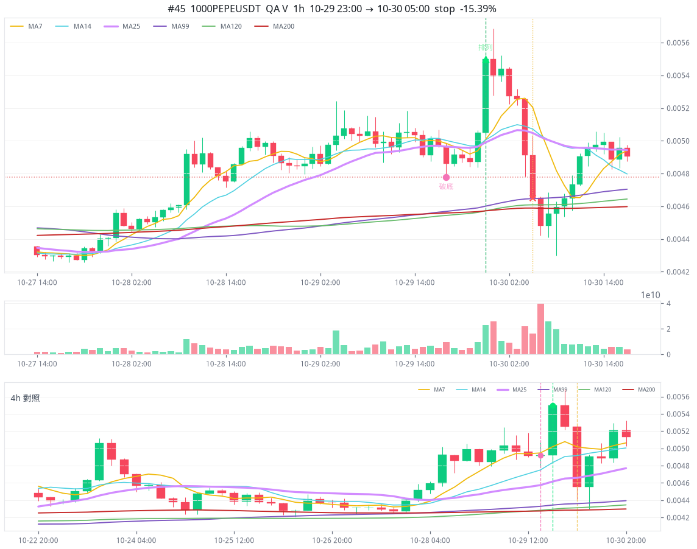
進場 3.2562（排列那根 1h 收盤） 停損 2.7464（破底低點；收盤跌破才出，距離 15.66%） 停利 4.2758（2R） 出場 2.7925 破底 2.7464 深度 9.82% 在下 31h 量比 3.05x 進場均線 MA7 3.06431 MA14 2.94785 MA25 2.94427
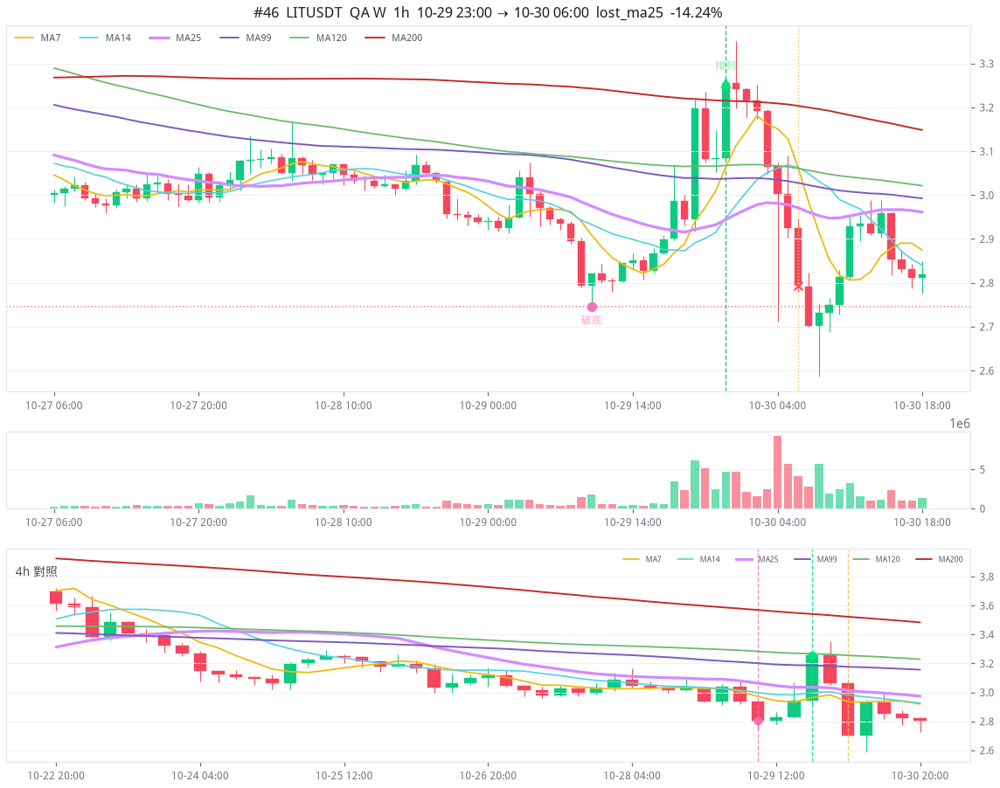
進場 0.7187（排列那根 1h 收盤） 停損 0.692（破底低點；收盤跌破才出，距離 3.72%） 停利 0.7721（2R） 出場 0.6857 破底 0.692 深度 2.70% 在下 25h 量比 2.82x 進場均線 MA7 0.709914 MA14 0.704564 MA25 0.704484
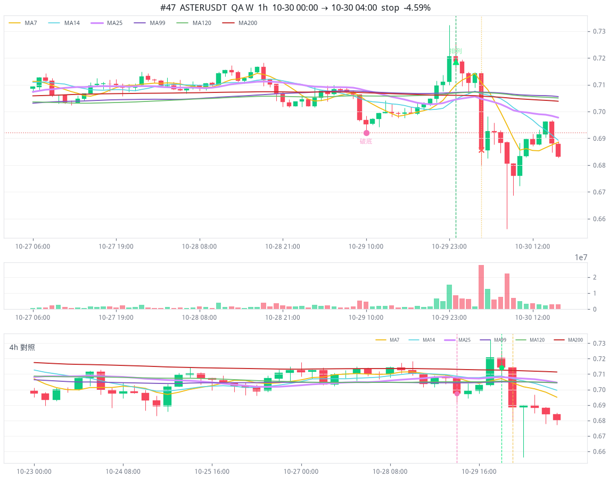
進場 0.05642（排列那根 1h 收盤） 停損 0.03111（破底低點；收盤跌破才出，距離 44.86%） 停利 0.10704（2R） 出場 0.05276 破底 0.03111 深度 20.05% 在下 5h 量比 14.71x 進場均線 MA7 0.03993 MA14 0.0394186 MA25 0.0392464
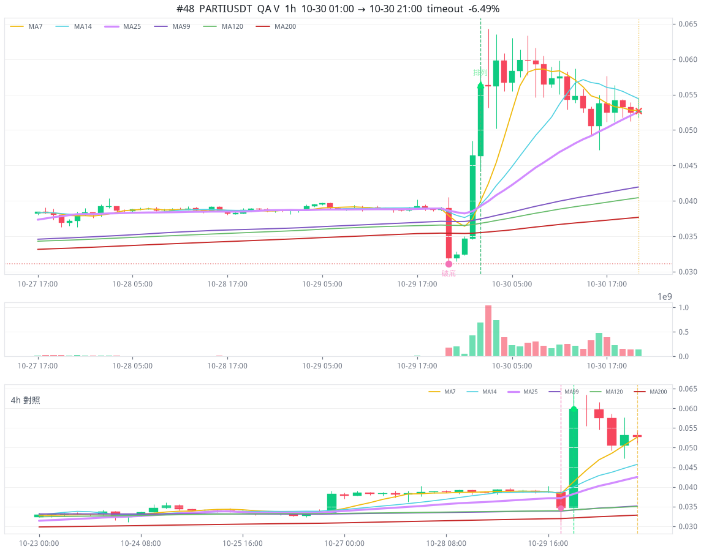
進場 606.1（排列那根 1h 收盤） 停損 583.39（破底低點；收盤跌破才出，距離 3.75%） 停利 651.52（2R） 出場 651.52 破底 583.39 深度 3.55% 在下 21h 量比 5.29x 進場均線 MA7 603.944 MA14 599.301 MA25 598.262
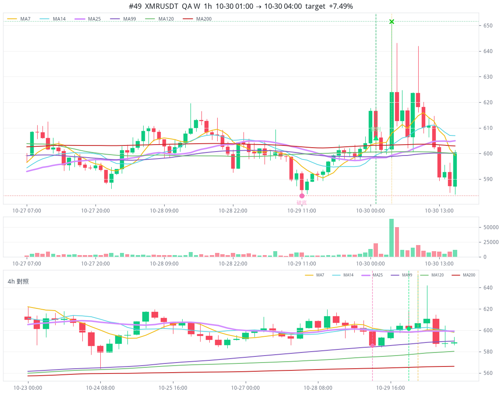
進場 0.003946（排列那根 1h 收盤） 停損 0.003225（破底低點；收盤跌破才出，距離 18.27%） 停利 0.005388（2R） 出場 0.005232 破底 0.003225 深度 4.95% 在下 7h 量比 7.43x 進場均線 MA7 0.003446 MA14 0.00341693 MA25 0.00340348
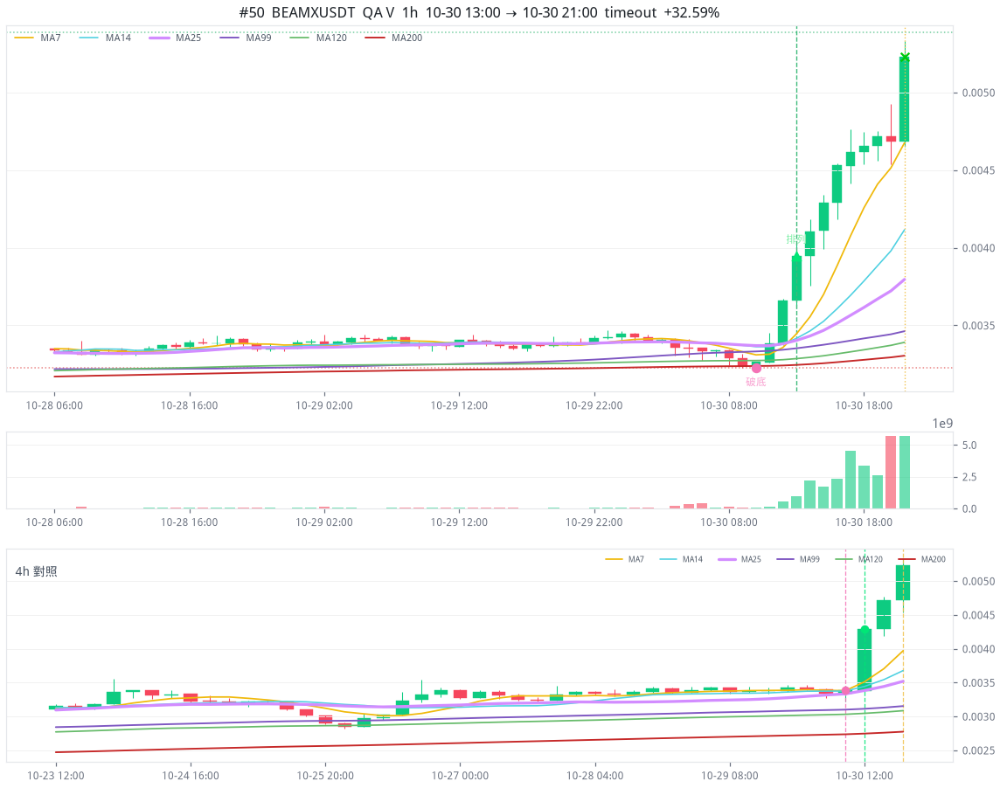